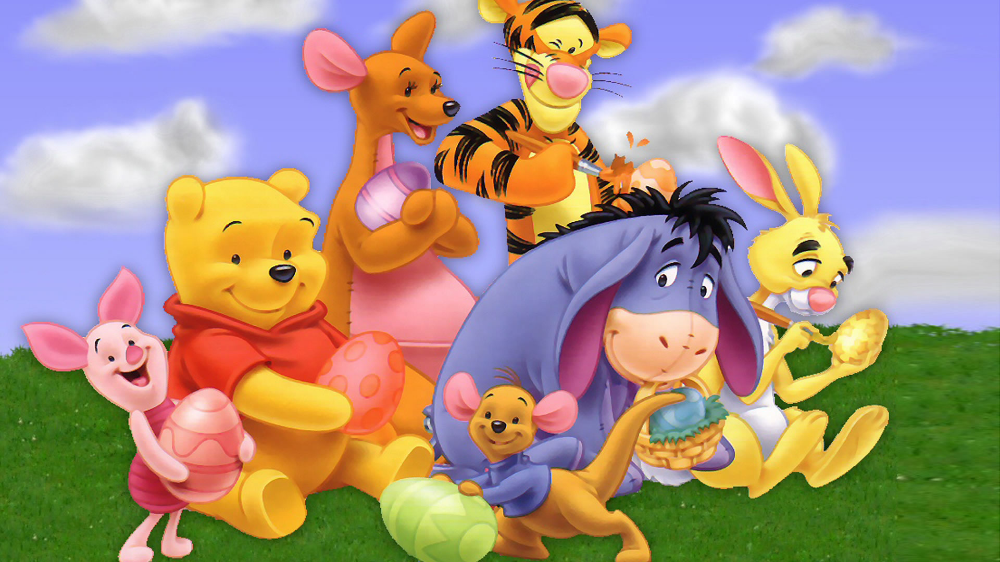

Winnie-the-Pooh Characters


<Eeyore>
A pessimistic, gloomy,
depressed, anhedonic,
old grey stuffed donkey
who is a friend of Pooh

<Pooh>
Pooh is naive and slow-witted,
but he is also friendly,
thoughtful and steadfast

<Piglet>
He is a very small animal of a generally
timid disposition,
tries to be brave and
on occasion conquers
his fears

<Tigger>
He is cheerful, outgoing,
competitive in a
friendly way,
and has complete confidence
in himself.

<Robin>
In the books
he is a young boy and
one of Winnie-the-Pooh's
best friends

<Rabbit>
Rabbit likes to take charge
and come up with
elaborate plans,
and also an organizer

<Kanga>
She is a female
kangaroo and the doting
mother of Roo.
Kanga is kind-hearted,
calm, patient and docile

<Roo>
Roo is so small that
falls down mouse holes
while practicing jumps,
and too small to reach
the first rail of the
Poohsticks bridge

<Owl>
Owl is the stuffy and
talkative eldest
main character
who presents himself
as a mentor and
teacher to the others

<Heffalump>
Heffalumps are elephants
from a child's viewpoint,
and are described as
honey-eating elephants

<Gopher>
He is portrayed as
hard-working, especially
in his tunnels
(which he inevitably falls
into at least once)